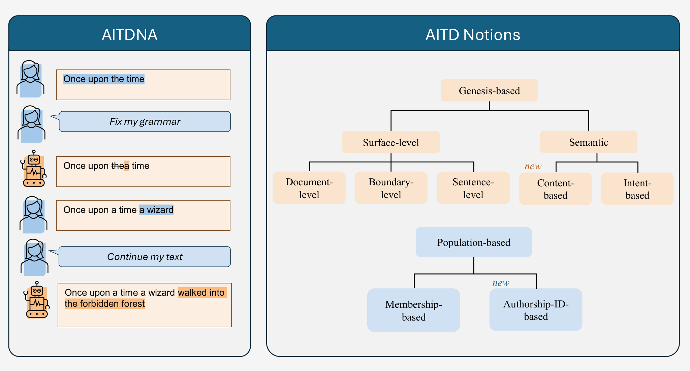

Interaction Replay
Human–AI co-writing session from AITDNA, replayed step by step. Press Play to visualize.
User
Bot
Your AI Text is not Mine is a project on AI-generated Text Detection (AITD) with three main contributions.

Although it is generally agreed that AI-generated text poses a broad societal risk, there is no common understanding in the AI-generated text detection
literature on what constitutes harmful use. Rather, existing datasets and approaches often define their own criteria and make their own assumptions,
sometimes implicitly, and often only loosely related to real-world needs and applications.
To address this gap, we here systematically define various
notions of AI-generated text and their characteristics. To study these, we collect AITDNA - a new benchmark of human-machine co-constructed texts that
is annotated with detailed genesis information, such as the entire edit and AI-interaction history. We benchmark various machine-generated text detectors
and find that they often only perform well for specific notions but not as broad detectors. We release code and data publicly.
Human–AI co-writing session from AITDNA, replayed step by step. Press Play to visualize.
Interactive visualization of our AITD definitions.*
Character-level spans of same authorship, corresponding to original text edits. All our notions are derived from this one.
One label per document (AI if ≥ 50% of tokens are AI-generated).
One label per sentence (AI if ≥ 50% of tokens are AI-generated).
Divide text into N parts by finding most optimal split indices (here N=5). Optimality here means the balance between segment length and purity. A segment is labeled AI if ≥ 50% of tokens are AI-generated.
Sentence-level labels based on a pre-defined set of rules specifying allowed and forbidden types of user queries.
Sentence-level labels based on a pre-defined set of rules specifying allowed and forbidden types of model output.
Token-level labels based on occurence of N-grams in a reference human corpus (N=2).
*Authorship-ID-notion is not presented as we have a limited number of human texts per author.
A quick-start guide to loading and working with AITDNA.
from datasets import load_dataset
from torch.utils.data import DataLoader
# available notions: "original", "sentence", "document", "boundary", "intent", "content", "span", "membership"
ds = load_dataset("UKPLab/AITDNA", name="sentence", split="test")
loader = DataLoader(ds, batch_size=1, collate_fn=lambda dp: dp)
for batch in loader:
for text in batch:
data = text["data"]
metadata = text["metadata"]
for snippet in data:
print(snippet)
Please cite our paper if you make use of AITDNA:
@article{dycke2026youraitextmine,
title={'Your AI Text is not Mine': Redefining and Evaluating AI-generated Text Detection under Realistic Assumptions},
author={Nils Dycke and Marina Sakharova and Nico Daheim and Iryna Gurevych},
year={2026},
journal={arXiv preprint arXiv:2606.04906},
url={https://arxiv.org/abs/2606.04906}
}